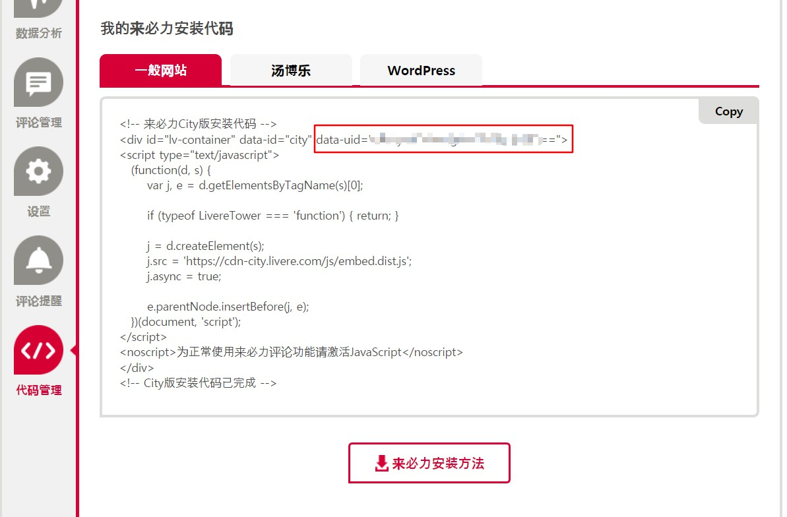
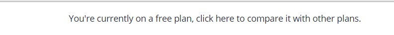
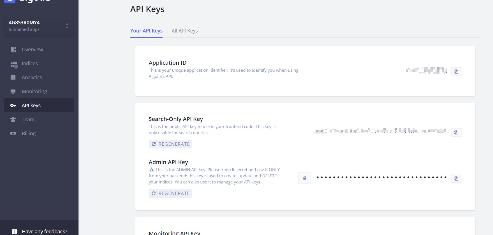
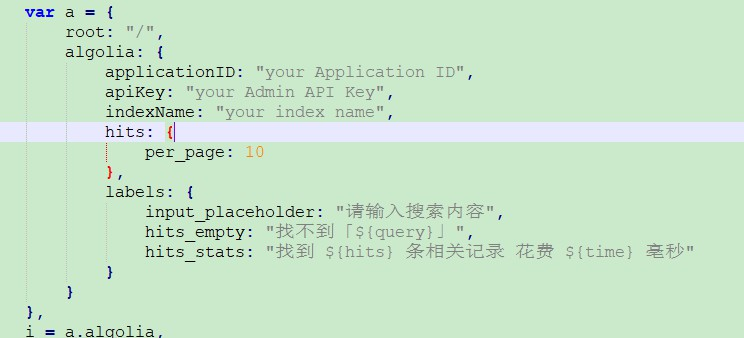
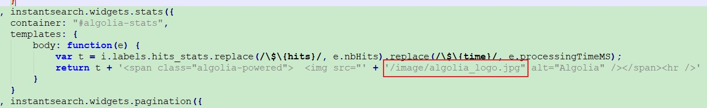
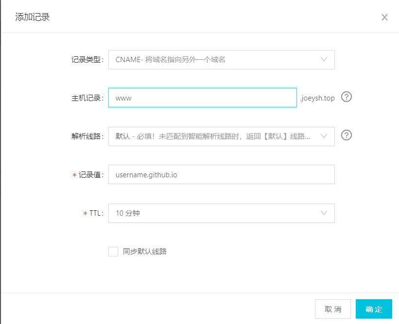

前言
这是本人的最新博客，也是刚刚搭建起来的，过程中还是遇到了很多的坑，自己也对Anisina这个主题进行了一些更改，希望能够帮到大家，然后有兴趣的可以自己尝试进行搭建，话不多说，开始吧！
起步
hexo是一个是基于node.js的快速、简洁且高效的博客框架，Anisina是一个hexo的主题，简洁，明了，这也是本人选择这个主题的原因。
下载
可以参考hexo的官网，对应环境需要node和git我也不再多说，参考官方教程完成hexo的安装；
Anisina的安装也请参考官方的教程,下面我要说的是关于Anisina的配置文件；
Anisina的配置
打开 _config.yml进行修改：
#这是基本的配置 看名字也能看出含义 也可以参考官方解释 |
侧边栏
现在我来说说侧边栏的配置:

首先说说图片吧，Anisina是对七牛有支持的，但我没弄，使用的是本地的方式，本地使用的方式：
进入博客的根目录下中的source文件夹中，建立一个文件夹，随您取名img或者image，您开心就好。
然后把图片放入其中，取图片的时候使用项目的绝对路径，加入文件夹的名称是img，您用图片的时候
只需要/img/xxx.jpg,这样的方式就可以取到。
我们继续来说侧边栏，以下是侧边栏的配置：sidebar: true
sidebar-about-description: "创造价值，赢得尊重" # 个人描述
sidebar-avatar: /image/header.jpg # 头像，图片就是使用的上面说的那种方式配置的
zhihu_username: Joeysh # 这是下载主题下来文件里面就有的，只需要配上您各个社交账户的名称就可以，当您点击对应的头像的时候，会自动的通过接口的方式定位到您的账户页面
github_username: joeyangsh
#下面是关于标签的配置，之前我就存在标签不显示的情况，他这个好像默认是1，改成0就可以了
featured-tags: true
featured-condition-size: 0
#如题所示，注意使用json的方式
friends: [
{
title: "掘金",
href: "https://juejin.im/user/5b854099f265da433874ee02"
},
{
其他的按照上面的方式进行配置...
}
]
这样过后侧边栏的配置就完成了，也就是我这个显示的样子。
顶部
创建一个 Tags 导航页面
- 运行命令:hexo new page “Tags” , 这会在博客的 source 目录下生成一个名为 Tags 的文件夹, 里面会有一个 index.md 格式的页面,如果没有请手动创建.
- 然后打开 yourblog/source 文件夹 , 找到 Tags/index.md 这个文件, 然后设置在两条的—里面, 指定一个 layout: tags值.注意 key 和 value 之间的空格
- 然后运行命令,重新生成博客内容: hexo clean && hexo g , 然后可以运行 hexo serve 在本地查看效果

这样tag的标签就完成啦，再说说my work同样的：
- 运行命令:hexo new page “my-works” , 这会在博客的 source 目录下生成一个名为 my-works 的文件夹, 里面会有一个 index.md 格式的页面,如果没有请手动创建.
- 然后打开 yourblog/source 文件夹 , 找到 my-works/index.md 这个文件, 然后设置在两条的—里面, 指定一个 layout: works值.注意 key 和 value 之间的空格
- 然后运行命令,重新生成博客内容: hexo clean && hexo g , 然后可以运行 hexo serve 在本地查看效果

但是这样的话您打开里面是没有什么内容的，下面我在说说关于内容：
- 进入yourblog/source，建立一个文件夹，名字是_data，注意下划线哦
- 然后在里面建立一个文件，名为：project.json
- 然后…在里面配置就好了。放心，我会说怎么配置的
下面的就是配置：{
"一段话": {
"title": "这是一个标题",
"subTitle": "这是一个副标题",
"img_link": " ",
"use" : ["java"],
"link": "",
"data":"2019.01-01",
"direction": "关于work的一个测试"
},
"一段话2": {
"title": "这是一个标题2",
"subTitle": "基于 这是一个副标题2",
"img_link": "",
"use" : ["java","mysql","spring"],
"link": "",
"data": "2018.01-01",
"direction":
"关于work的一个测试"
}
}
就跟文件名的后缀一样，使用的依然是json的方式，至于里面字段的含义，我想我不需要多说了吧，到此，头部的就完成了，大家去试试吧！
文章
大家创建完tags导航页面后里面是没有标签的，它的标签是根据文章里面设置的标签生效的，下面说说文章的头部：
创建一条博文
hexo new "your-post-name"
在创建好的文章的头部加入以下配置：
---
layout: post
title: hi 2019
subtitle: 'hi, I''m Joeysh'
author: Joeysh
header-img: ''
cdn: header-on
tags:
- java
- mysql
date: 2019-01-01 00:00:00
---
上面的tags里面就是到时候tags里面的标签。
评论
添加 来比力 评论系统,首先需要大家去注册，然后安装，选择免费版的，中间的过程就省略了，最后来到以下界面：

复制图中圈起来的uid来到您的_config.yml进行以下配置：use_livere: ture
livere_uid: your uid
这样评论就添加完毕了！
扩展
对这个主题我参考网上的资料也进行了一些扩展，可能大家最明显的就是感觉到了有了搜索，文章阅读量和网站的访问量了，下面我就说说怎么扩展的，Are you ready?
搜索
这是我参考别人做好的方式进行扩展和设置的，原文中写的还是很详细，大家可以去看一下，当然我这里也会说我配置扩展的过程：
我这里是依赖的Algolia,主要的原因是它是免费的。这是一个外部服务,在您使用所有的时候会调用外部的服务，由外部服务返回结果并展示，下面就说一下过程：
首先进入hexo-algolia按照指示进行安装完毕。
同样的您要去Algolia注册并创建您的APPs，下面说一下步骤：
- 首先进入 Algolia注册，这我就不说了；
- 进入控制台，在控制台的头部会有以下的样式；
 因为我这里已经更改了，所以是免费的，但是新注册的用户注册后的 14 天内拥有所有功能（包括收费类别的）之后若未续费会自动降级为免费账户，免费账户 总共有 10,000 条记录，每月有 100,000 的可以操作数；
- 在indices中新添加一个index，名字可以随意取，但是后面需要用到；
打开左侧的API KEYS

先打开以下界面

- 编辑对应的记录，得到以下的样式

这样创建就完成了。
接下来是修改配置文件了，打开您的_config.yml添加以下配置：algolia:
applicationID: "your Application ID"
apiKey: "your Search-Only API Key"
adminApiKey: "your Admin API Key"
chunkSize: 5000
indexName: "输入刚才创建index name"
配置完成了，接下来我们要修改主题中的元素了，首先就添加顶部的搜索按钮。
打开themes/Anisina/layout/_partial/nav.ejs
1、在ul标签中加入以下内容：<li>
<% if (config.algolia){ %>
<li>
<a href="#search" class="popup-trigger">
<i class="fa fa-search"></i>
</a>
</li>
<% } %>
</li>/
2、添加搜索弹出的model框，同样是themes/Anisina/layout/_partial/nav.ejs，在最下面加上以下代码
<% if (config.algolia){ %>
<div class="site-search">
<div class="algolia-popup popup">
<div class="algolia-search">
<div class="algolia-search-input-icon">
<i class="fa fa-search"></i>
</div>
<div class="algolia-search-input" id="algolia-search-input"></div>
</div>
<div class="algolia-results">
<div id="algolia-stats"></div>
<div id="algolia-hits"></div>
<div id="algolia-pagination" class="algolia-pagination"></div>
</div>
<span class="popup-btn-close">
<i class="fa fa-times-circle"></i>
</span>
</div>
</div>
<% } %>
3、将下面的js和scc分别添加到
themes/Anisina/source/js
themes/Anisina/source/css
js文件：
css文件：
引入js和css文件：
themes/Anisina/layout/_partial/head.ejs，在head标签里面添加以下内容；
<% if (config.algolia){ %>
<%- css('css/algolia') %>
<%- js('js/algolia') %>
<%- js('js/instantsearch.min') %>
<% } %>
到现在，搜索的扩展大部分已经完成了，还有最后一步：
打开刚刚添加的algolia.js文件,找到下面的地方进行修改:

最后，回到bolg的根目录，在source文件夹下的image里面添加以下图片：

当然，假如您的图片文件不是叫这个名字话需要您在algolia.js文件中修改以下地方为您的图片文件名称：

至此，搜索的扩展就完成了，下面再说说使用吧；
对了还有一个操作,不做的话运行hexo algolia会出现以下的问题：
ERROR [Algolia] Please set an `HEXO_ALGOLIA_INDEXING_KEY` environment variable to enable content indexing.
ERROR >> Read https://npmjs.com/hexo-algolia#api-key for more informations.
这个时候需要进行以下的设置：
export(windows 为 set)HEXO_ALGOLIA_INDEXING_KEY=您的Search-Only API key
set(Mac为git，bash为export) HEXO_ALGOLIA_INDEXING_KEY可以查看时候设置成功
然后更新索引：
hexo algolia
如果更新不成功，请clean一下继续，
出现以下情况为更新成功：

若出现Algolia搜索栏但是无法跳转到搜索结果，请运行以下代码：
npm install hexo-algolia@0.2.0
然后在站点配置中找到package.json， 把里面的hexo-algolia， 換成 “hexo-algolia”: “^0.2.0”;
这样搜索的功能也就彻底的完成了，可以前往Algolia的索引处查看更新的索引信息。
以上配置过程参考的文章：
https://www.jianshu.com/p/00f4bc425249
https://juejin.im/post/5af3f9d1518825673e35a6eb
统计量
在搜索完成过后接下来该说说网站下面的访问量、访客和文章的阅读量是怎样扩展的了:
这里使用的是不蒜子提供的阅读统计功能:
进入主题下的layout/_partial/footer.ejs
添加以下代码：
<span id="busuanzi_container_site_pv"" style="font-size: 12px;display:none;">总访问量：<span id="busuanzi_value_site_pv"></span>次</span>
<span class="post-meta-divider">|</span>
<span id="busuanzi_container_site_uv" style="font-size: 12px;display:none;">总访客：<span id="busuanzi_value_site_uv"></span>人</span>
对了，忘说位置了，搜索class=”copyright text-muted”的一个标签中，还有在地步的位置添加以下代码：
<script async src="//busuanzi.ibruce.info/busuanzi/2.3/busuanzi.pure.mini.js"></script>
这样，访问量和访客就完成了；
下面就文章的阅读量：
进入主题下的layout/post.ejs
搜索class=”tags text-center”，在以下位置进行配置：

<br/><span id="busuanzi_container_page_pv" style="display:none;">阅读量：
<span id="busuanzi_value_page_pv"></span>次</span>
现在我的扩展也就全部完成了；
其实我也想弄头部的archive，按照时间进行归档，但是我没弄出来，希望有弄出来的朋友可以跟我说一下，我也没去研究了。
部署
到现在，不知道您的博客是否达到了您希望的效果，如果可以的话，接下来我就在说说部署吧！
我这里使用的是 github ,首先需要您来到以下界面创建一个仓库：

这里我需要说一下仓库的名称，这里需要是您的github名称加上 .github.io
就像我的需要是 Joeyangsh.github.io，这是github规定的，表达式是这样
{username}.github.io
所以仓库的名字需要是这样的。
创建成功过后进入仓库，来到以下界面：


找到GitHub Pages点击change theme选个主题select theme设置模板,
等待github pages创建完成，然后输入您创建的地址,也就是您的仓库名称
yourName.github.io
测试github pager是否创建成功。此时页面是空的没有任何东西。

下面要做的就是配置；
打开您的_config.yml修改以下配置：
deploy:
type: git
repo:
github: your address #您的仓库地址
branch: master #提交的分支
仓库地址查看：

配置完毕后使用以下命令，部署到github：
hexo clean
hexo g
hexo s #先本地输入地址查看一下是否是自己满意的ctrl+c结束
hexo d #部署到远处仓库
当然您也可以不存在本地查看，直接执行以下命令：
hexo g --d #直接生成静态资源并推送部署到远程仓库
这个时候会出现以下错误：
ERROR Deployer not found: git。
需要安装 hexo-deployer-git，执行以下命令
npm install hexo-deployer-git --save
再次推送
hexo d
就成功了，在浏览器的地址栏输入您gitgub的访问地址就能访问到您的博客了。
对了再提醒一句，当您完成一篇博客的时候别忘了搜索哦，需要更新索引库执行以下命令：
hexo algolia
这个时候您的博客就能被访问了，当然您也可以自己注册域名进行绑定，下面我在说说github的自定义域名吧。
绑定域名
我是在阿里云注册的域名,至于注册域名的流程我就不再讲了，网上有很多的教程，域名注册完成后来到域名控制台：

点击解析，进入解析界面，添加域名解析：
分别添加以下两条记录：


以下是完成后的页面：

到现在，域名解析也添加完毕了，10分钟左右就会起效。
可以前往这里查看是否生效。
然后进入博客的根目录，在souce目录下建立一个名为CNAME的文件，没有后缀的哦，进入文件在里面添加您注册的域名：
假如您的域名是aaa.com那么只需要在里面添加一条
aaa.com
然后从新部署一次，再次使用您的域名访问就可以了。
https
前往github勾选以下内容：

当您后面不需要使用自己的域名的时候想使用github默认域名的时候只需要把CNAME文件删除再重新部署一次ok了，如果发现部署后访问不了的情况请清一下浏览器的缓存。
结语
到现在，hexo使用Anisina加上github搭建个人博客的过程就完了，以上内容如果有错误的地方还请各位纠正，本人会及时的更正。